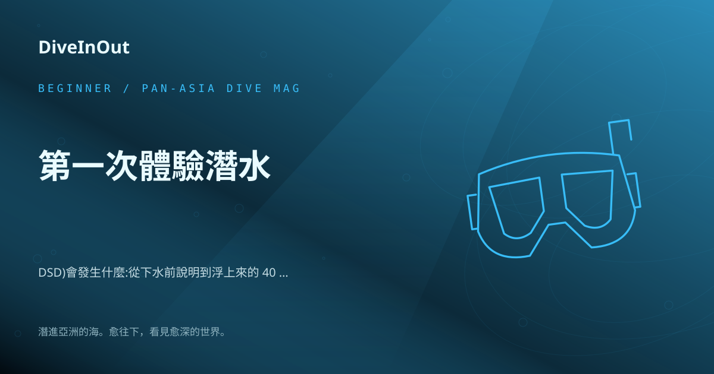
新手
第一次體驗潛水(DSD)會發生什麼:從下水前說明到浮上來的 40 分鐘
「第一次體驗潛水（DSD）會發生什麼？」如果你對這個問題充滿好奇，那麼你來對地方了！體驗潛水，也就是 Discover Scuba Diving (DSD)，是
從亞洲潛旅到裝備與海洋，慢慢讀，安心下水。
21 篇文章

「第一次體驗潛水（DSD）會發生什麼？」如果你對這個問題充滿好奇，那麼你來對地方了！體驗潛水，也就是 Discover Scuba Diving (DSD)，是
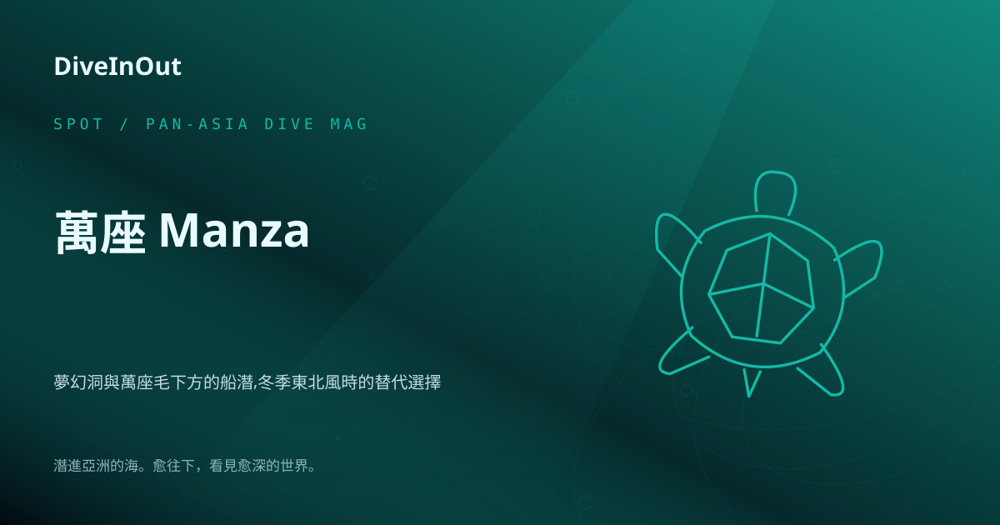
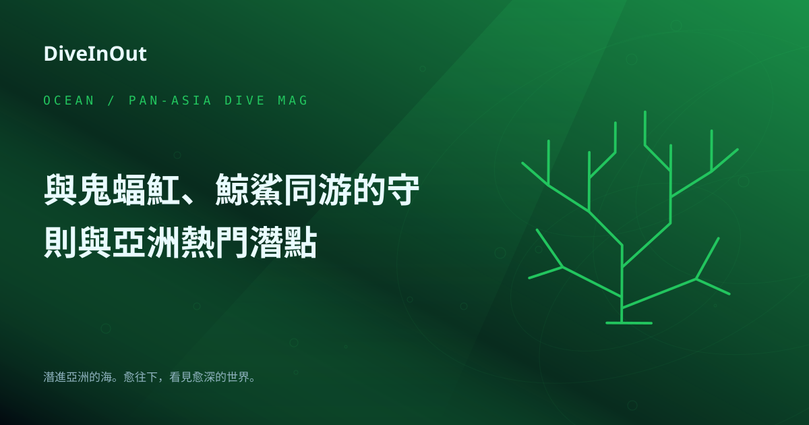
潛入蔚藍深海，與海洋中最溫柔的巨人——鬼蝠魟和鯨鯊共游，是許多潛水員的夢幻清單首選。牠們優雅的身影和龐大的體型，總能帶來令人屏息的感動。然而，作為負責任的潛水員
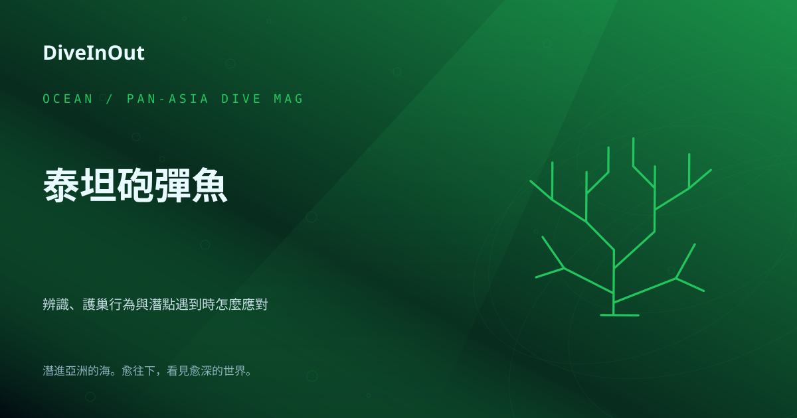
潛水員們，當我們在熱帶海域探索繽紛海底世界時，總會遇到各種奇妙的海洋生物。其中，有一種魚類以其鮮明的個性和強烈的領地意識而聞名，那就是「泰坦砲彈魚」（Titan
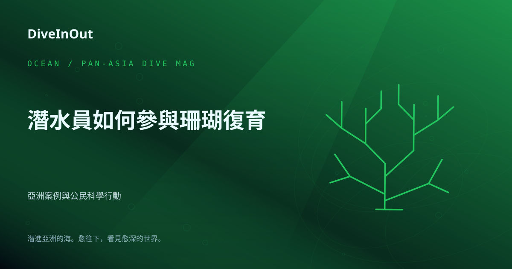
潛水員們，你們是否曾被海底五彩斑斕的珊瑚礁深深吸引？這些被譽為「海洋熱帶雨林」的生態系統，不僅是無數海洋生物的家園，更是維持海洋健康不可或缺的基石。然而，氣候變
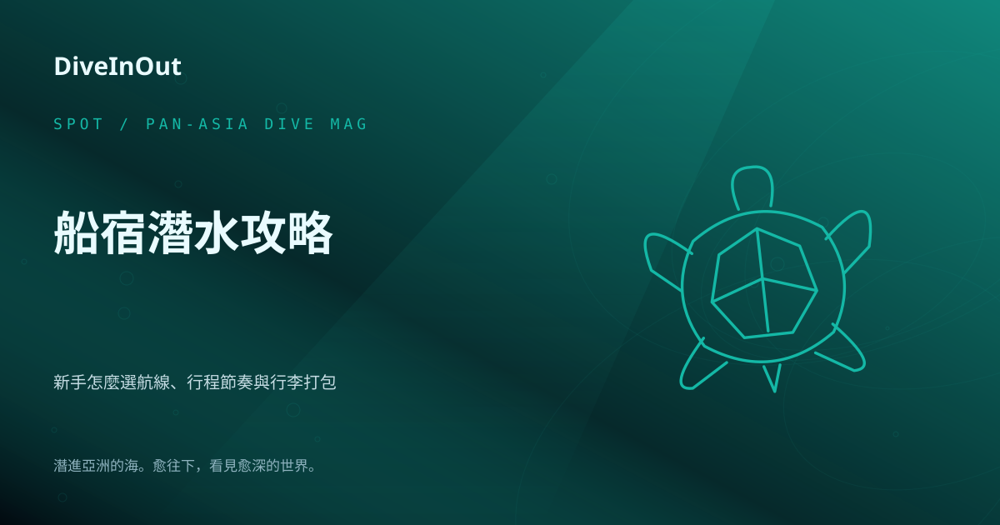
潛入蔚藍大海，探索人跡罕至的秘境，是許多潛水員的夢想。而船宿潛水（Liveaboard Diving）正是實現這個夢想的最佳方式！想像一下，每天醒來就在潛點，早
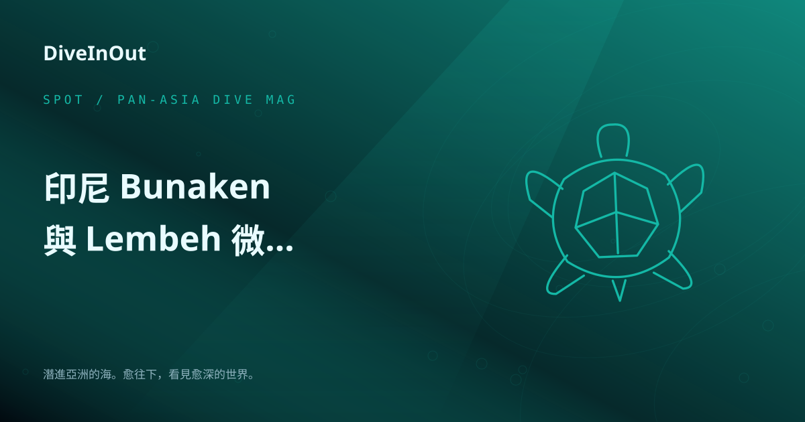
印尼北蘇拉威西（North Sulawesi）是潛水員心中的寶藏之地，擁有截然不同的潛水風貌：一邊是壯麗的布納肯（Bunaken）海洋公園，另一邊則是微距天堂藍
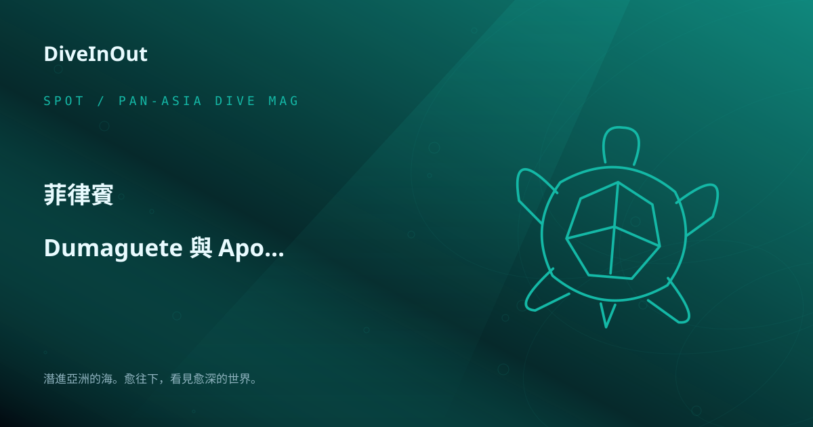
菲律賓是潛水天堂，而杜馬蓋地（Dumaguete）與阿波礁（Apo Reef）更是其中兩顆耀眼的明珠。雖然地理位置相距甚遠，但它們各自以獨特的海洋生態吸引著全球
潛入帛琉，探索「上帝的水族箱」！這個位於西太平洋的島嶼國家，以其豐富多樣的海洋生態和世界級潛點聞名，被譽為全球十大潛水勝地之一 。帛琉由約340個大小島嶼組成，
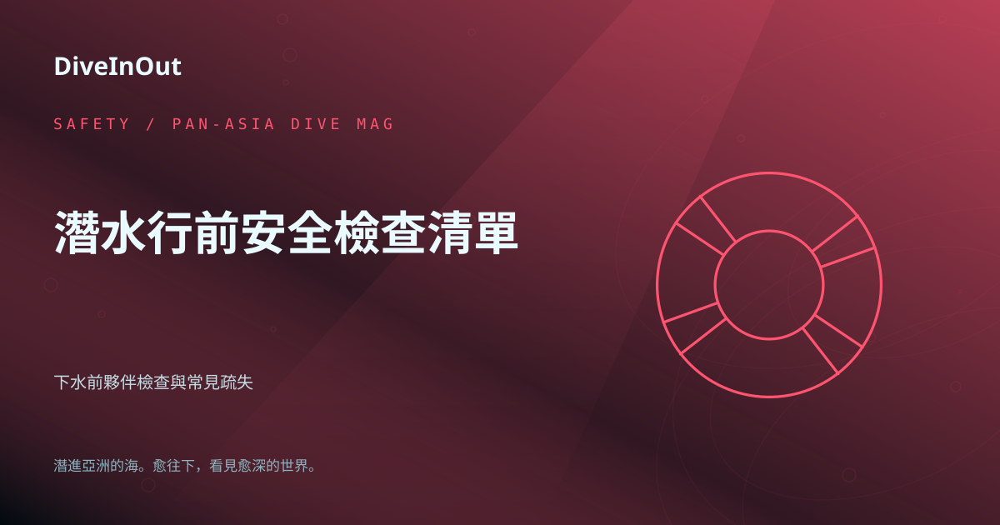
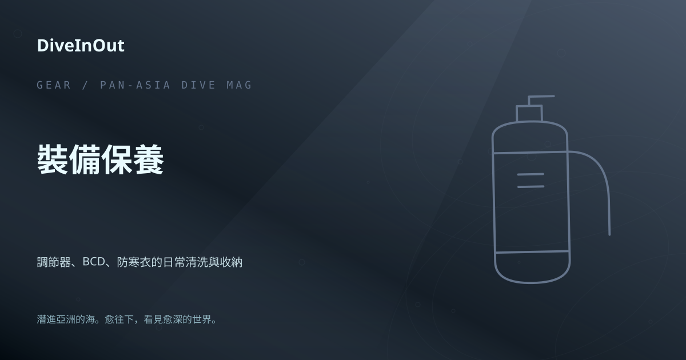
潛水，是探索海底世界的奇妙旅程，而我們的潛水裝備，就是這趟旅程中最忠實的夥伴。為了確保每次潛水都能安全又盡興，裝備的日常清洗與收納可說是潛水員的「必修課」。海水
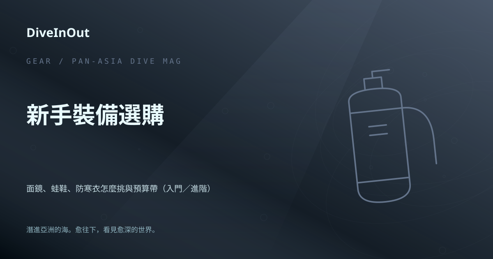
哈囉，潛水夥伴們！準備好踏入繽紛的水下世界了嗎？對於潛水新手來說，挑選第一套個人裝備總是既興奮又有點不知所措。別擔心，Saki 這次要來跟大家分享面鏡、蛙鞋和防
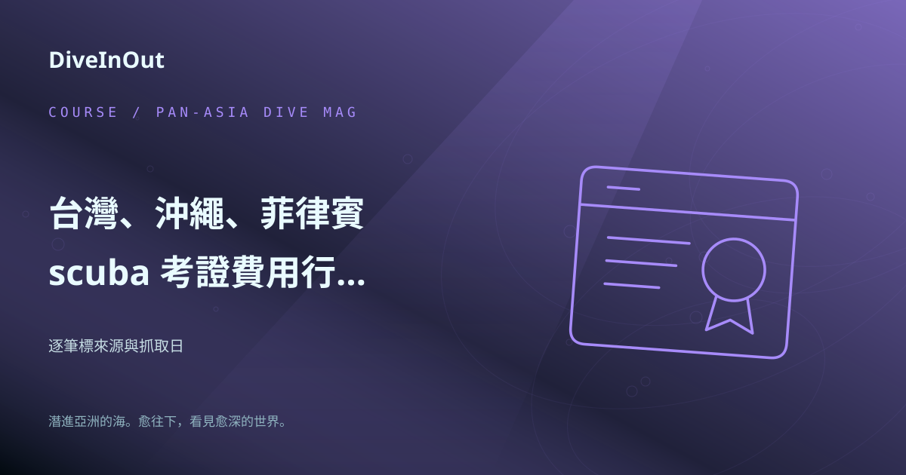
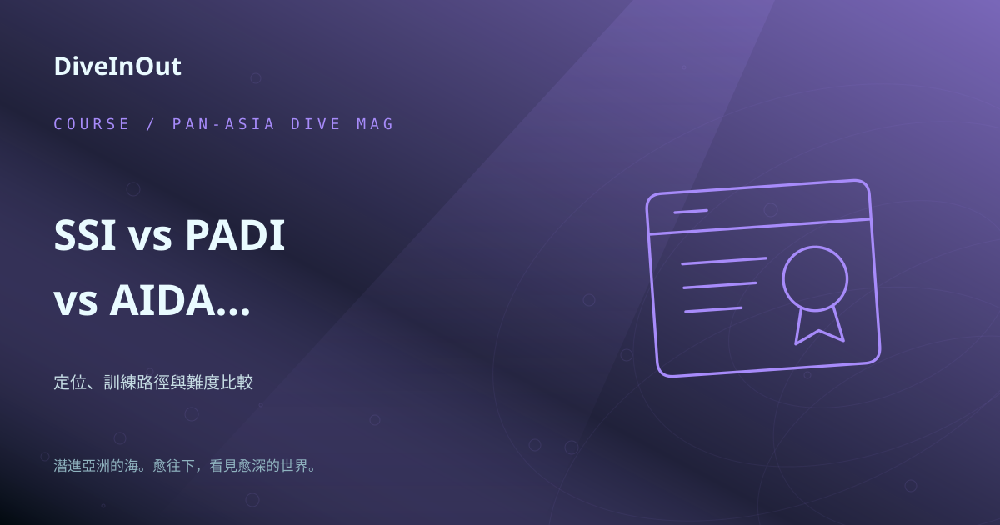
潛入蔚藍，探索水下世界，是許多人夢寐以求的體驗。然而，在踏上這段旅程之前，選擇適合自己的潛水認證系統是關鍵的第一步。今天，Saki 將帶大家一窺四大主流潛水認證
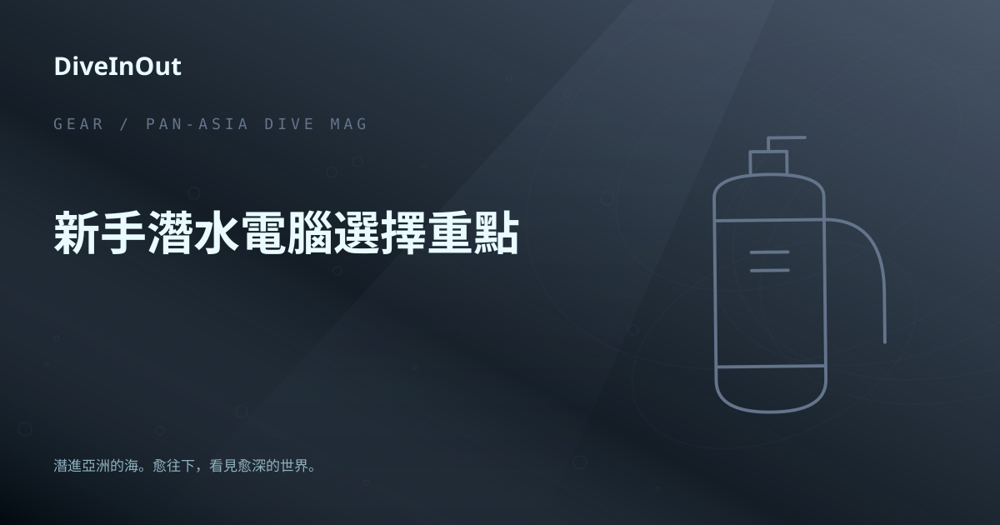
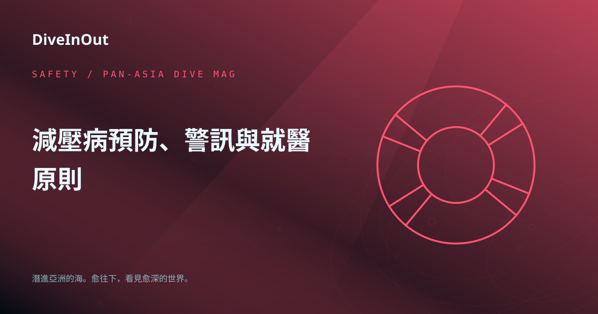
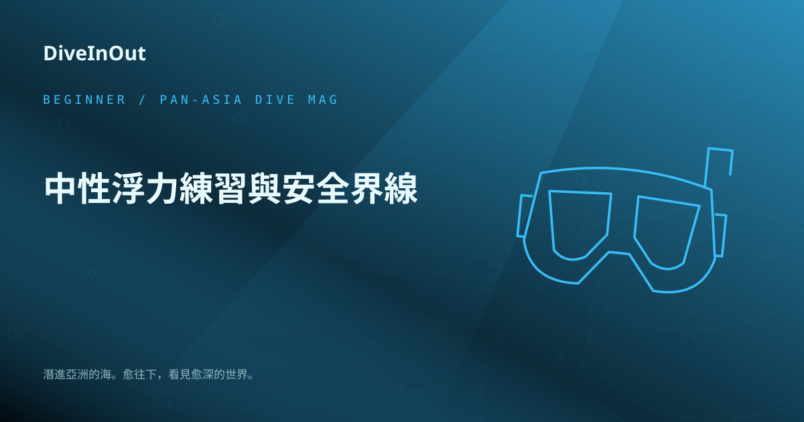
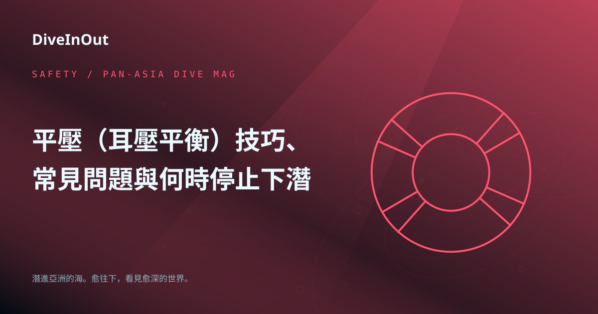
潛入蔚藍大海，探索神秘的水下世界，是許多人夢寐以求的體驗。然而，在享受潛水樂趣之前，掌握「平壓」（耳壓平衡）這項關鍵技能至關重要。平壓不僅能保護我們的耳朵免受傷
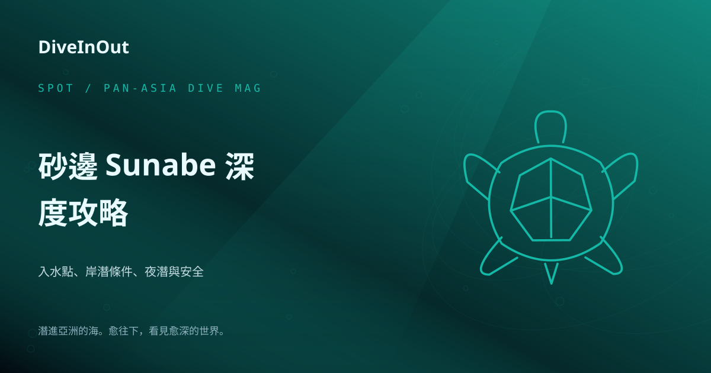
哈囉，潛水夥伴們！我是 Saki，今天我們要一起「潛」進沖繩本島中部，那個以豐富軟珊瑚和友善岸潛聞名的潛水天堂——砂邊（Sunabe）。這裡不僅是潛水新手的理想
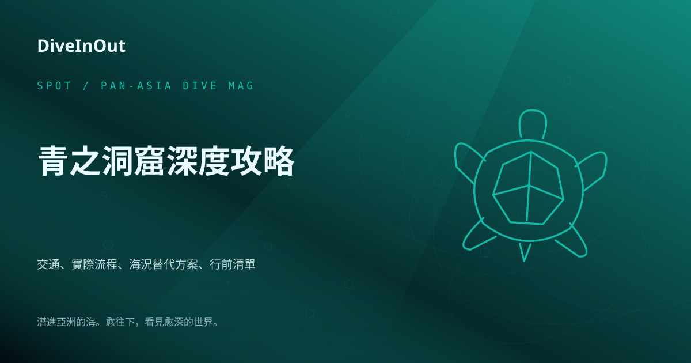
沖繩的「青之洞窟」以其神秘的湛藍光芒，成為許多潛水與浮潛愛好者心中的夢幻秘境。這座位於恩納村真榮田岬的海蝕洞穴，因陽光穿透水面，折射在白色沙底上，營造出如夢似幻
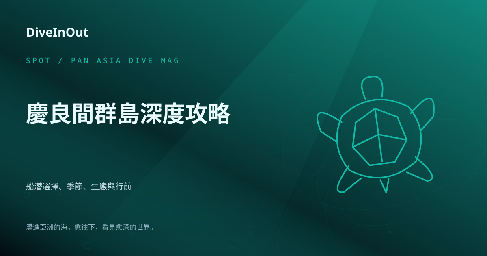